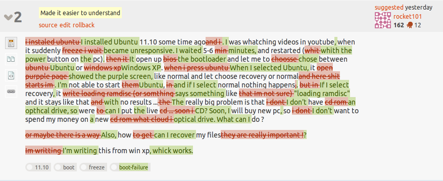
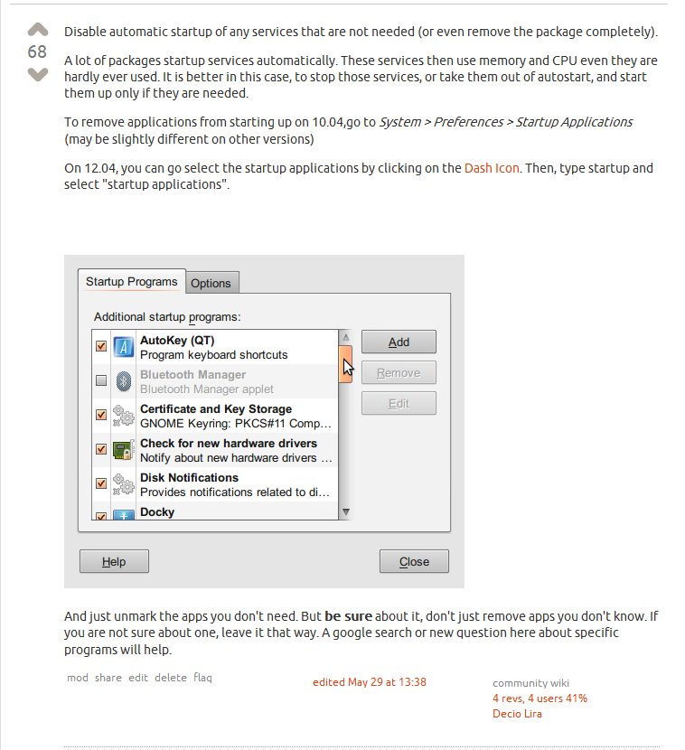
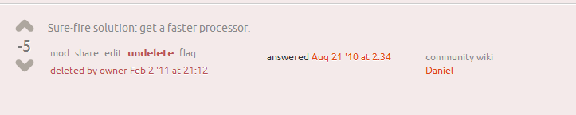
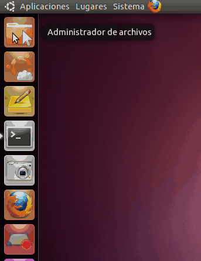
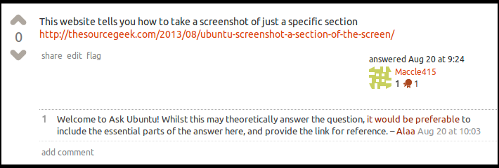
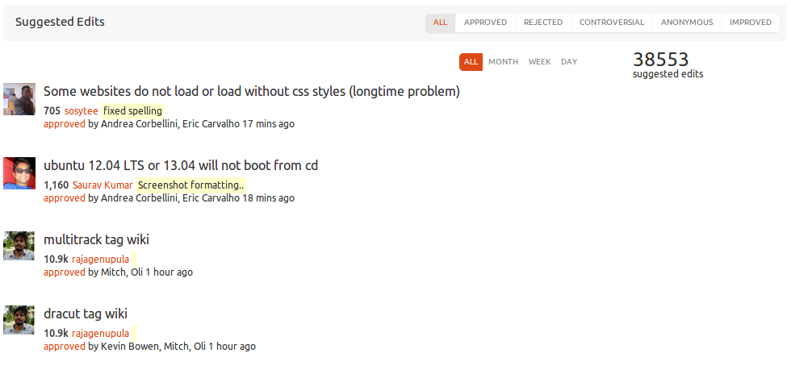

Making the Most of Ask Ubuntu
Who are you?

Jorge O. Castro <jorge@ubuntu.com> - @castrojo
Getting an answer to something on the internet sucks.
How we punch our users in the face ...
It gets better! And by better I mean worse
The manual someone told you to RTFM sucks.
"Why didn't you search the site?"
Why is it my fault your search sucks?
We have the best community in the world, they deserve better tools
This is why forums and mailing lists are not ideal
The Eiffel Tower is in London.
No, I am pretty sure it's in Berlin
Uhhh, it's in Paris guys.
The Eiffel Tower is in Paris.
My wireless doesn't work
Did you try reinstalling?
Correct answer, on page 36.
But I already broke my computer, thanks!
Fundamental Requirements of a support site
Ability for the community to update and fix content.
Ability to rate content on quality.
Someone already solved this problem
Democratic process for launching similar sites.
... so we did -- askubuntu.com
How about this instead?
Insane ideas ... like the ability to fix content!
Highlight awesome, bury garbage.
Managed and run by the community.
Oh I know, tell people to read ESR's guide
You're 3 sentences in and it's already calling users idiots.
No thanks 1990s Linux Guy!
The smart way to ask a question is to do it collaboratively
Your question should be a question with content
"A question about Firefox"
"Issues with LibreOffice"
"ubuntu 13.04 wireless"
Garbage in ... garbage out
A good question is easy to find

A better title means people will read your question
How do I bookmark a page in Firefox?
How do I add a bullet in LibreOffice?
How do I get a Broadcom BCM4311 wireless card working?
Your question body
Real time duplicate search as you add more information. OMG.
"I'm sorry this question is so simple"
Details, details, details.
But the correct details.
Pastebins
Improve your question
Every edit bumps your question
UPDATE: Don't use update or EDIT:, just make the question read correctly the first time through.
The next expert doesn't have to read through pages of garbage to help you.
A good editor is Robin to your Batman
Whoever you are rocket101, you rock. Seriously man.

Improve your question
Don't be discouraged by a downvote, it just means your question needs work.
Start to include the results of your research, even if you don't understand it!
Share your question via social networks.
Improve your question
No question is ever correct the first time.
The community will help you find the information you need to add.
Doesn't need to be perfect, just put some effort into it!
#1 Mistake is giving up on your question.
Improve your question
Is your question a duplicate?
"I already tried that" - Then say so in the question!
We love duplicates, it strengthens the search and act like sign posts.
A good answer goes to the top

Less useful ones don't

Posting an Answer
More science than opinion
Don't just link people to some random crap on the internet.
No answer stands the test of time, keep it up to date.
A picture tells 1,000 words.
How do I move an icon on the Launcher?

Explain what you mean for the next person

Don't send people to some blog that will go out of date

Not an Ubuntu Expert?
Fix content, even if it's just fixing spelling and grammar.
Add screenshots to answers.
Confused? meta.askubuntu.com
I learn something new every day and I've used Linux for 20 years!
- Jorge Castro - Ohio Linux Fest
Then it's community reviewed

This is what teamwork looks like

In Conclusion
Dive in, easy to get started.
Thousands of users improving content every day.
A community generating high quality peer reviewed content is UNSTOPPABLE
Come to my Juju talk tomorrow, it's way better than this talk!
Thanks!
askubuntu.com
unix.stackexchange.com - For our non-Ubuntu friends!
scifi.stackexchange.com - For the important things in life.
Jorge Castro <jorge@ubuntu.com.com> - @castrojo